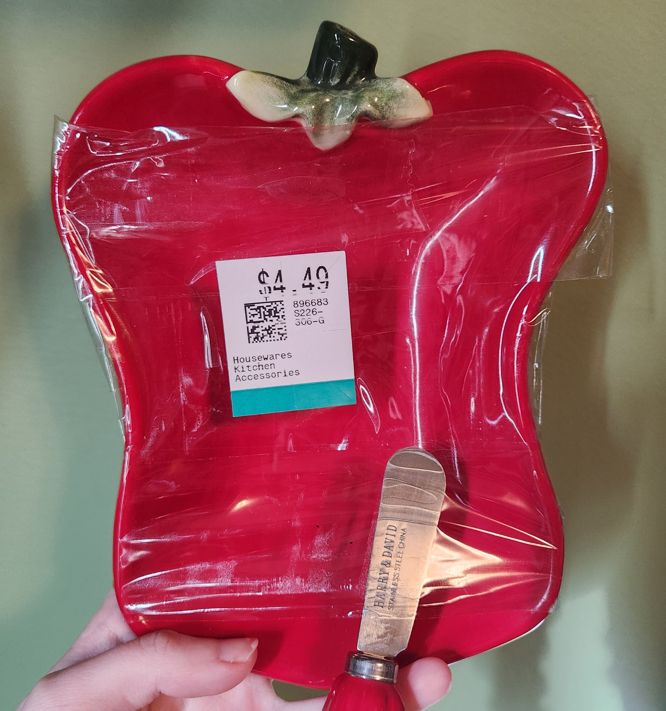

Who is Katie Greenwood?
She's so glad you asked. Katie is currently a student at Johnson County Community College pursuing a certification in software development. Before that, though, she was studying animation! We love a well-rounded queen.
Here is a bit of Katie's experience in creative fields:
- Approximately fifteen years in character artistry
- Four years of experience in crochet
- Twelve years of creative prose, and five in poetry (some published)
- About five years of animation and storyboarding
- A lifetime of finding food-shaped ceramics at the thrift store and counting
Proof of the aforementioned ceramics:
Image taken by Katie Greenwood. Dish found at Savers.
So, What's Available for Commission?
Generally, Katie offers:
- Character sheets
- Rough character animation
- Storyboards
- Posed works (standard character commissions)
- Animatics
- Written works (custom pricing)
For standard pricing, see the Portfolio page.